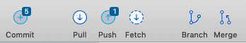
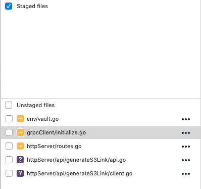
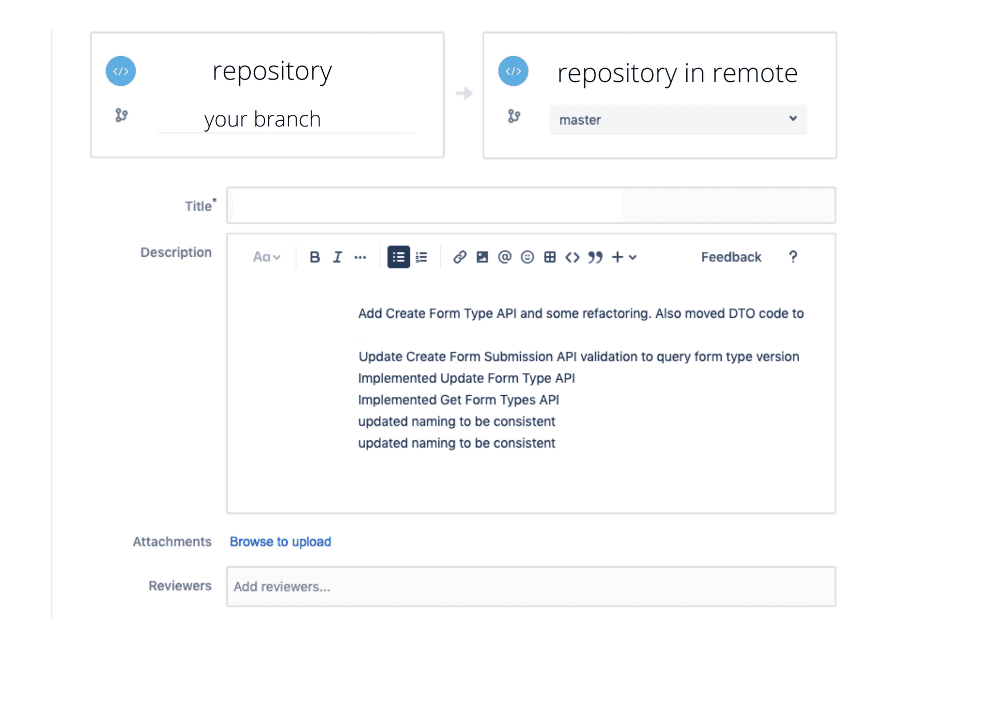

5 Essential Git Concepts
Improve your understanding of Git!


Introduction
Hello everyone! In this article I will be explaining more about Git and its 5 crucial concepts. Git is a version control software that helps with coordinating code among programmers. It is useful when you are working on big projects as a team, where other programmers are constantly adding new features to different parts of the project. Git helps with the tracking and integration of such changes.
This will be a theoretical article, without command line inputs, for beginners to understand how git works and the general flow of how Git works. Using Git on the command line might scare away many fledgling programmers. Luckily, there are many Graphical User Interface (GUI)s available, such as SourceTree, which are much more user-friendly.
icons of the 5 basic commands from SourceTree
Content Page
What is Clone?
Cloning a repository (essentially the entire code of a project) is usually the first thing you do when you join a project. The idea is to get a copy of all the code in the existing project and save it in your local computer.
What is Stage and Commit?
representation of adding and staging file from SourceTree
After making the necessary tweaks to your local repository, the next step is to add your changes to the repository in the cloud (the remote). Before that, there are a couple of steps. First is to stage your commits, i.e. picking the changes in your code that you want to push to the remote. Once selected, you can commit them to the branch you were working on.
What is Push?
The next step is Push which is to “send” the changes in your branch to the remote repository. This imports the branch into the remote and the remote will have 2 branches, the newly edited branch and the master. Note this is not merging, but we are one step closer.
What is Pull Request?
pull requests from BitBucket
As a junior programmer, you would want someone to check your code and the changes you have made before merging them with the master/dev branch. This is where Pull Requests come in handy. Specify who you would like to check your code and they will receive a notification that your code needs reviewing. They can leave comments for you to work on before the last step!
Do note that Pull and Pull Requests are different. If you are curious about the Pull concept, you can read more about it in this article.
What is Merge?
As the name suggests, merge is finally adding your changes from your local branch to the remote repository. Ensure that you are in the merge-receiving branch (most of the time it is master/origin). It is also important to verify that the 2 branches are updated with the latest commits, this is to prevent some past code to “fall through the cracks”.
Conclusion
And that is it! 5 main concepts on how to use Git. Git is incredibly useful and understanding it will make your life much easier. You are on your way to becoming a great programmer!
Interested to learn more about making your Git life easier? Check out this article on our 5 handy tips for Git.
Want to know the difference between origin, origin/master and master? Read this article!